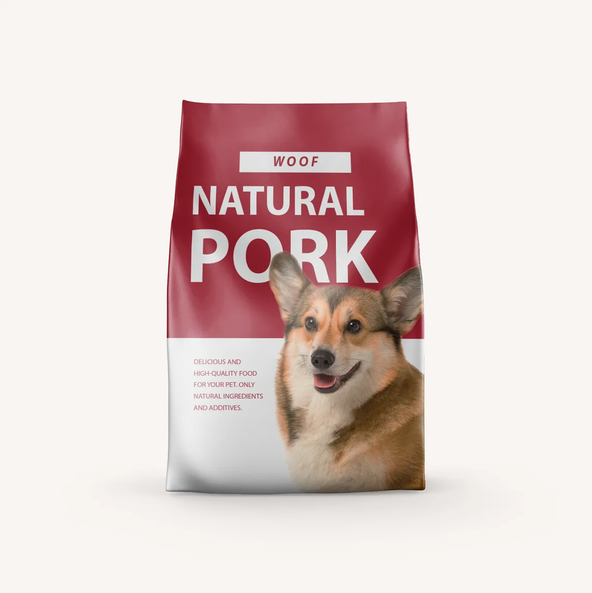
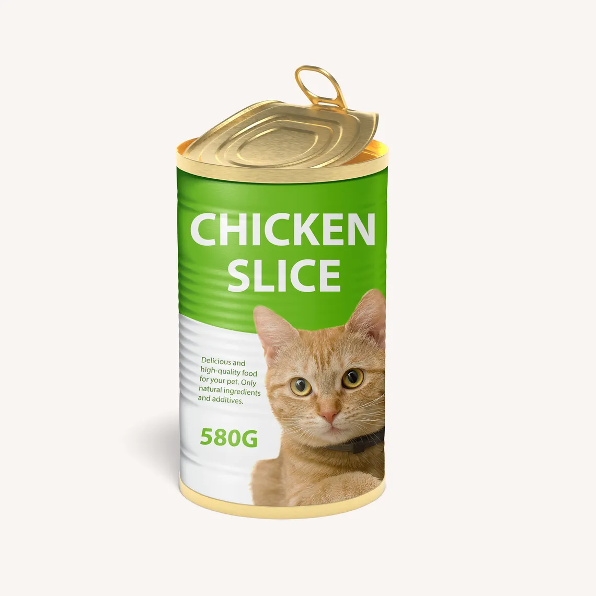
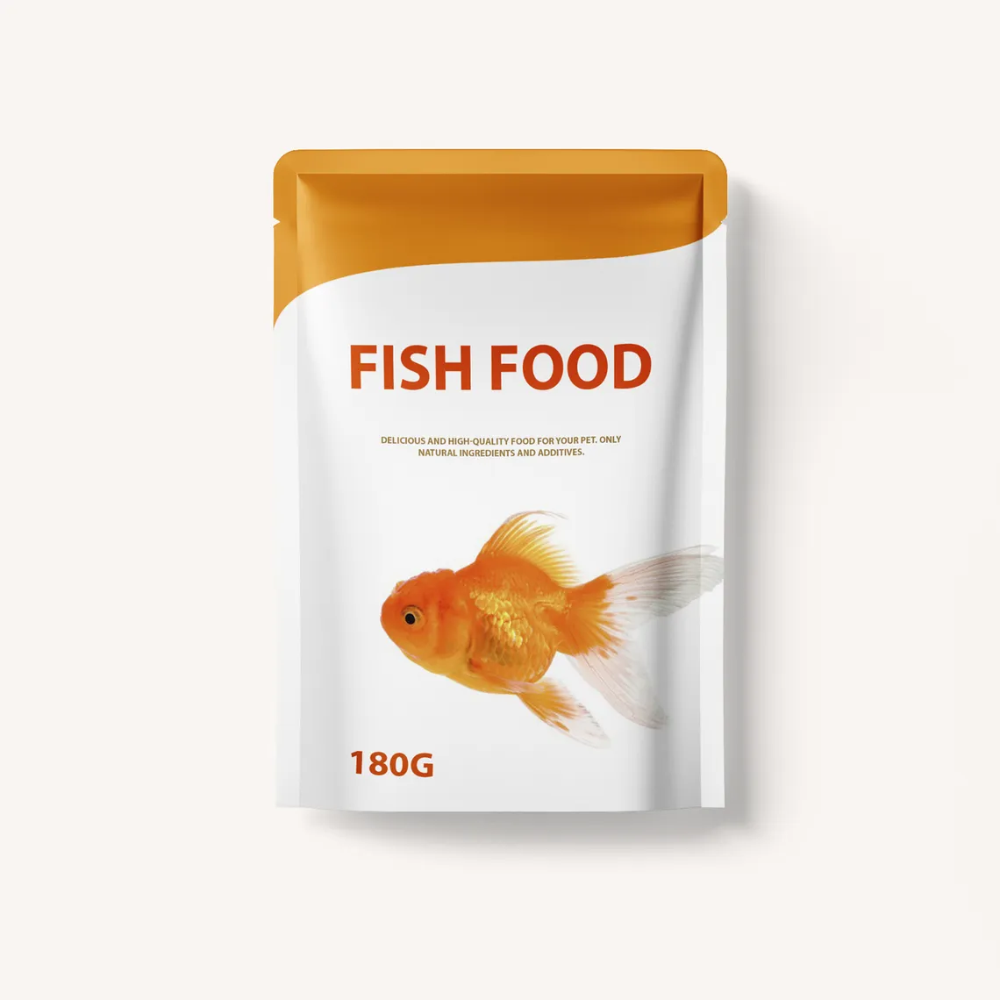
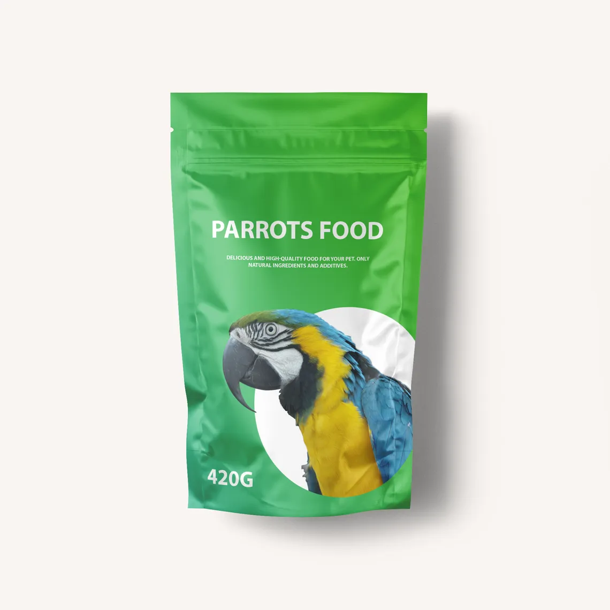

Dry Food & Treats

Great well-balanced dry and canned food for your pets by the best producers.
For Dogs

Natural beef-2$
Meat And Bone Meal, Corn Gluten Meal, Animal Fat, Soybean Meal, Natural Flavor.

Natural Chicken-3$
Deboned Chicken, Chicken Meal, Brown Rice, Corn, Corn Gluten Meal, Natural Flavor.

Natural pork-2$
Deboned Lamb, Chicken Meal, Split Peas, Lentils, Chicken Fat, Pork Meal, Dried Chicken, Pea.
For Cats

Turkey Pate-1$
Deboned Turkey, Turkey Broth, Turkey Liver, Dried Egg Product, Cranberries, Calcium Carbonate.

Tuna & Salmon-2$
Chicken, Poultry Broth, Liver, Meat By-Products, Salmon, Tuna, Guar Gum, Minerals.

Wheat Gluten, Liver, Chicken, Meat By-Products, Tomatoes, Carrots, Shrimp, Soy Flour, Salt.
Other

Grain & Nuts-3$
Whole Brown Rice, Oat Groats, Wheat Bran, Wheat, Soybean Meal, Soybean Hulls.

Fish Food-5$
Dried Yeast, Ground Brown Rice, Shrimp Meal, Dried Fish Protein Digest, Wheat Gluten.

Parrots Food-7$
Canary Grass Seed, White Millet, Oat Groats, Ground Corn, Red Millet, Flax Seed.